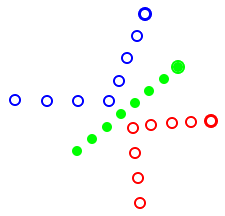
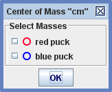

Težišče
(cm)

Sled Težišče (center of mass, cm) predstavlja težišče zbirke vseh točkovnik mas. Njegova masa ni nastavljiva temveč je to vsota vseh točkovnih mas. podobno njegovih položajev v korakih ne označujemo pač pa so ti določeni s položaji in masami točkovnih mas. Za razlikovanje od odtisov neodvisnih točkovnih mas so odtisi težišča polni.
cm je sam po sebi točkovna masa z običajnimi vektorji gibanja. Več o tem zasledimo v poglavju Točkovna masa.
1. Dodajanje točkovnih mas v cm

Točkovne
mase, ki jih želimo vklkučiti v cm, izberemo tako, da jih odkljukamo v
prikazanem pogovornem oknu. Pogovorno okno se
prikaže pri začetnem kreiranju težišča ali pri izbiri Izberi mase
v menuju sledi cm.